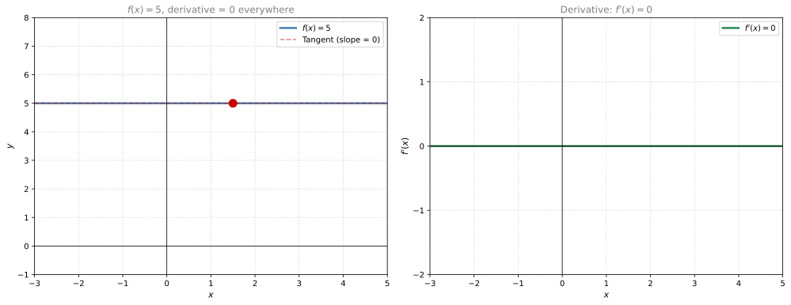
Derivatives of Basic Functions
calculus
Derivative Notation
Like any language, mathematics has its own way of expressing concepts. There are two common notations for the derivative, and we will use whichever is more convenient depending on context.
From \(\Delta\) to \(d\)
Recall from the previous section that the slope of a secant line is calculated as the change in distance over the change in time:
\[ \text{slope of secant} = \frac{\Delta x}{\Delta t} \]
As the interval shrinks to become infinitely small, the secant becomes a tangent and the slope becomes:
\[ \text{slope of tangent} = \frac{dx}{dt} \]
Here \(dx\) and \(dt\) represent infinitesimal (infinitely small) changes in the \(x\) and \(t\) directions. This is the derivative.
In general, we use \(x\) for the horizontal axis and \(y\) for the vertical axis. So the derivative is written as \(\frac{dy}{dx}\).
Lagrange’s Notation
If your function is called \(f(x)\), and \(y = f(x)\), then the derivative at the point \(x\) is written:
\[ f'(x) \]
This is read as “f prime of x.” It tells you the slope of the tangent line to the curve \(y = f(x)\) at the point \(x\).
Leibniz’s Notation
The same derivative can also be written as:
\[ \frac{dy}{dx} \quad \text{or equivalently} \quad \frac{d}{dx} f(x) \]
Here, \(\frac{d}{dx}\) can be thought of as an operator: something that you apply to a function to get its derivative. When you apply \(\frac{d}{dx}\) to \(f(x)\), you get \(f'(x)\).
Summary
Both notations mean the same thing:
\[ f'(x) = \frac{dy}{dx} = \frac{d}{dx} f(x) \]
We will use Lagrange’s notation \(f'(x)\) and Leibniz’s notation \(\frac{dy}{dx}\) interchangeably throughout these notes, picking whichever is more convenient for the situation.
Derivatives of Common Functions
Our goal is to be able to calculate the derivatives of most functions we know. The good news: constant functions, linear functions, quadratics, polynomials, exponentials, logarithms, and trigonometric functions all have very nice and simple derivatives.
Constant Functions
The simplest function is a constant: \(f(x) = c\), which is a horizontal line. The height is always the same value \(c\), no matter what \(x\) is.
What is the derivative? At any point \(x_0\), the tangent line is the same horizontal line. The slope is:
\[ \frac{\Delta y}{\Delta x} = \frac{c - c}{\Delta x} = \frac{0}{\Delta x} = 0 \]
Since \(y\) never changes, the numerator is always zero. A horizontal line has zero slope everywhere.
Note
Derivative of a constant: If \(f(x) = c\), then \(f'(x) = 0\).
Linear Functions
Now consider a general line: \(f(x) = ax + b\), where \(a\) is the slope and \(b\) is the \(y\)-intercept.
What is the derivative? Pick any point on the line and compute \(\Delta y / \Delta x\). Because it is a straight line, the tangent at every point has the same slope as the line itself. So the derivative is simply \(a\).
Let’s verify with the algebra. Take two points on the line:
- Point 1: \((x, \; ax + b)\)
- Point 2: \((x + \Delta x, \; a(x + \Delta x) + b)\)
The slope between them is:
\[ \frac{\Delta y}{\Delta x} = \frac{a(x + \Delta x) + b - (ax + b)}{\Delta x} = \frac{ax + a\Delta x + b - ax - b}{\Delta x} = \frac{a \Delta x}{\Delta x} = a \]
Everything cancels out and we are left with \(a\).
Note
Derivative of a line: If \(f(x) = ax + b\), then \(f'(x) = a\).
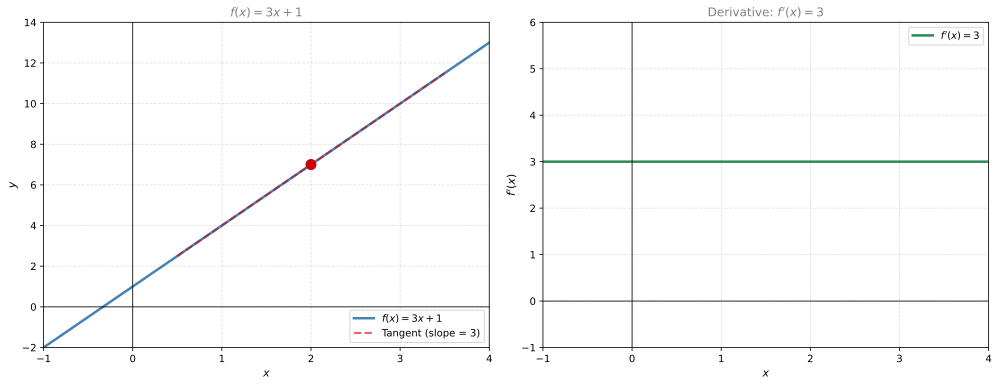
This makes intuitive sense: the derivative tells you the slope, and a line has constant slope everywhere.
Quadratic Functions
The simplest quadratic is the parabola \(f(x) = x^2\). Notice that to the left of the \(y\)-axis the tangent slopes are negative (the function is decreasing), and to the right they are positive (the function is increasing).
Let’s find the derivative at \(x = 1\) by computing slopes of secant lines with smaller and smaller intervals:
| \(\Delta x\) | \(f(1 + \Delta x)\) | \(\Delta f\) | Slope \(= \Delta f / \Delta x\) |
|---|---|---|---|
| 1 | \((1+1)^2 = 4\) | \(4 - 1 = 3\) | \(3 / 1 = 3\) |
| 1/2 | \((1.5)^2 = 2.25\) | \(2.25 - 1 = 1.25\) | \(1.25 / 0.5 = 2.5\) |
| 1/4 | \((1.25)^2 = 1.5625\) | \(1.5625 - 1 = 0.5625\) | \(0.5625 / 0.25 = 2.25\) |
| 1/8 | \((1.125)^2 = 1.2656\) | \(0.2656\) | \(2.125\) |
| 1/16 | \((1.0625)^2 = 1.1289\) | \(0.1289\) | \(2.0625\) |
| 1/1000 | \((1.001)^2 = 1.002001\) | \(0.002001\) | \(2.001\) |
The slopes are approaching 2. And \(2 = 2 \times 1\), which hints at the general formula.
Formal derivation:
\[ \frac{\Delta f}{\Delta x} = \frac{(x + \Delta x)^2 - x^2}{\Delta x} = \frac{x^2 + 2x\Delta x + (\Delta x)^2 - x^2}{\Delta x} = \frac{2x\Delta x + (\Delta x)^2}{\Delta x} = 2x + \Delta x \]
As \(\Delta x \to 0\), this becomes simply \(2x\).
Note
Derivative of \(x^2\): If \(f(x) = x^2\), then \(f'(x) = 2x\).
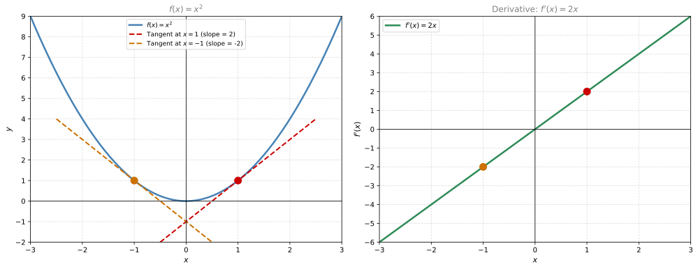
Notice how the derivative \(f'(x) = 2x\) is negative when \(x < 0\) (parabola going down), zero at \(x = 0\) (the bottom of the parabola), and positive when \(x > 0\) (parabola going up). The colored dots on the right plot correspond to the tangent points on the left.
Cubic Functions
The simplest cubic is \(f(x) = x^3\). Let’s find the derivative at \(x = 0.5\) using the same approach:
| \(\Delta x\) | \(\Delta f = (0.5 + \Delta x)^3 - 0.5^3\) | Slope \(= \Delta f / \Delta x\) |
|---|---|---|
| 1 | \((1.5)^3 - 0.125 = 3.25\) | \(3.25\) |
| 1/2 | \((1)^3 - 0.125 = 0.875\) | \(1.75\) |
| 1/4 | \((0.75)^3 - 0.125 \approx 0.297\) | \(1.188\) |
| 1/8 | \(\approx 0.119\) | \(0.953\) |
| 1/16 | \(\approx 0.053\) | \(0.848\) |
| 1/1000 | \(\approx 0.00075\) | \(0.752\) |
The slopes converge to 0.75, which is \(3 \times (0.5)^2\). This hints at the formula.
Formal derivation:
\[ \frac{\Delta f}{\Delta x} = \frac{(x + \Delta x)^3 - x^3}{\Delta x} \]
Expanding \((x + \Delta x)^3 = x^3 + 3x^2\Delta x + 3x(\Delta x)^2 + (\Delta x)^3\), then:
\[ = \frac{3x^2\Delta x + 3x(\Delta x)^2 + (\Delta x)^3}{\Delta x} = 3x^2 + 3x\Delta x + (\Delta x)^2 \]
As \(\Delta x \to 0\), the terms with \(\Delta x\) vanish, leaving \(3x^2\).
Note
Derivative of \(x^3\): If \(f(x) = x^3\), then \(f'(x) = 3x^2\).
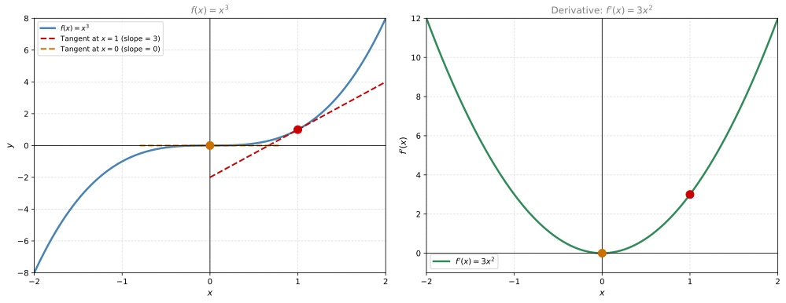
Notice that \(f'(x) = 3x^2\) is always non-negative (a parabola opening up). This makes sense because the cubic \(x^3\) is always increasing (or flat at the origin), so its slope is never negative.
Function \(1/x\)
Now let’s look at a more interesting function: \(f(x) = \frac{1}{x}\) (a hyperbola). Let’s find the derivative at \(x = 1\) (where \(y = 1\)):
| \(\Delta x\) | \(f(1 + \Delta x) = \frac{1}{1 + \Delta x}\) | \(\Delta f\) | Slope \(= \Delta f / \Delta x\) |
|---|---|---|---|
| 1 | \(1/2 = 0.5\) | \(0.5 - 1 = -0.5\) | \(-0.5\) |
| 1/2 | \(2/3 \approx 0.667\) | \(-0.333\) | \(-0.667\) |
| 1/4 | \(4/5 = 0.8\) | \(-0.2\) | \(-0.8\) |
| 1/8 | \(8/9 \approx 0.889\) | \(-0.111\) | \(-0.889\) |
| 1/16 | \(\approx 0.941\) | \(-0.059\) | \(-0.941\) |
| 1/1000 | \(\approx 0.999\) | \(-0.001\) | \(-0.999\) |
The slopes converge to -1, which is \(-1 \times 1^{-2}\).
Formal derivation:
\[ \frac{\Delta f}{\Delta x} = \frac{\frac{1}{x + \Delta x} - \frac{1}{x}}{\Delta x} = \frac{\frac{x - (x + \Delta x)}{x(x + \Delta x)}}{\Delta x} = \frac{-\Delta x}{x(x + \Delta x) \cdot \Delta x} = \frac{-1}{x(x + \Delta x)} \]
As \(\Delta x \to 0\), this becomes \(\frac{-1}{x \cdot x} = -\frac{1}{x^2}\).
Note
Derivative of \(1/x\): If \(f(x) = x^{-1}\), then \(f'(x) = -x^{-2} = -\frac{1}{x^2}\).
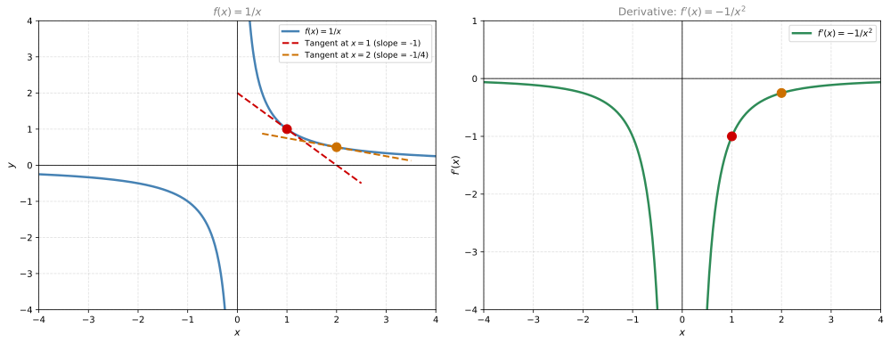
Notice that \(f'(x) = -1/x^2\) is always negative (for \(x \neq 0\)). This makes sense: the hyperbola \(1/x\) is always decreasing (getting closer to zero but never reaching it).
Power Rule
Looking at what we have computed so far, a beautiful pattern emerges:
| Function | Derivative |
|---|---|
| \(x^2\) | \(2x^1\) |
| \(x^3\) | \(3x^2\) |
| \(x^{-1}\) | \(-1 \cdot x^{-2}\) |
The pattern: bring the exponent down as a multiplier, then subtract one from the exponent.
Note
The Power Rule: If \(f(x) = x^n\), then \(f'(x) = nx^{n-1}\).
This works for any power, including negative and fractional exponents:
- \(f(x) = x^{100} \Rightarrow f'(x) = 100x^{99}\)
- \(f(x) = x^{-100} \Rightarrow f'(x) = -100x^{-101}\)
- \(f(x) = x^{1/2} = \sqrt{x} \Rightarrow f'(x) = \frac{1}{2}x^{-1/2} = \frac{1}{2\sqrt{x}}\)
Inverse Functions and Their Derivatives
An inverse function undoes what the original function does. If \(f\) sends 3 to 5, then the inverse \(f^{-1}\) sends 5 back to 3. More concretely: if \(f(x) = x^2\), then the inverse is \(g(y) = \sqrt{y}\), because squaring and then taking the square root brings you back to where you started.
Notation: if \(g\) is the inverse of \(f\), we write \(g(x) = f^{-1}(x)\). This does not mean \(1/f(x)\).
The key property: if you apply \(f\) and then \(g\), you get back your original input:
\[ g(f(x)) = x \]
The derivative of an inverse function has a beautiful relationship with the derivative of the original:
\[ g'(y) = \frac{1}{f'(x)} \]
where \(y = f(x)\). In words: the derivative of the inverse is the reciprocal of the derivative of the original.
Why does this work? Consider the plots of \(f(x) = x^2\) and \(g(y) = \sqrt{y}\). The graph of \(g\) is the reflection of the graph of \(f\) over the diagonal line \(y = x\). Any horizontal distance \(\Delta x\) on the left becomes a vertical distance on the right, and vice versa. So:
\[ \frac{\Delta g}{\Delta y} = \frac{\Delta x}{\Delta f} = \frac{1}{\Delta f / \Delta x} \]
As the intervals shrink to zero, this gives \(g'(y) = 1 / f'(x)\).
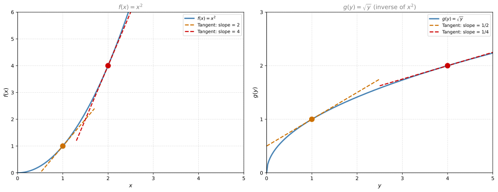
Example at \((1, 1)\): On the left, \(f'(1) = 2 \times 1 = 2\). On the right, \(g'(1) = 1/f'(1) = 1/2\). The slopes are reciprocals.
Example at \((2, 4)\) and \((4, 2)\): On the left, \(f'(2) = 2 \times 2 = 4\). On the right, \(g'(4) = 1/f'(2) = 1/4\). Again, reciprocals.
Note
Inverse function derivative: If \(g = f^{-1}\), then \(g'(y) = \frac{1}{f'(x)}\) where \(y = f(x)\).
Trigonometric Functions
Let’s look at \(f(x) = \sin(x)\). Consider a few key points and the slopes of their tangent lines:
| \(x\) | \(\sin(x)\) | Slope of tangent |
|---|---|---|
| \(0\) | \(0\) | \(1\) |
| \(\pi/2\) | \(1\) | \(0\) |
| \(-\pi/2\) | \(-1\) | \(0\) |
| \(-\pi\) | \(0\) | \(-1\) |
Now compare these slopes with the values of \(\cos(x)\) at the same points: \(\cos(0) = 1\), \(\cos(\pi/2) = 0\), \(\cos(-\pi/2) = 0\), \(\cos(-\pi) = -1\). They match exactly.
Note
Derivative of sine: If \(f(x) = \sin(x)\), then \(f'(x) = \cos(x)\).
Derivative of cosine: If \(f(x) = \cos(x)\), then \(f'(x) = -\sin(x)\).
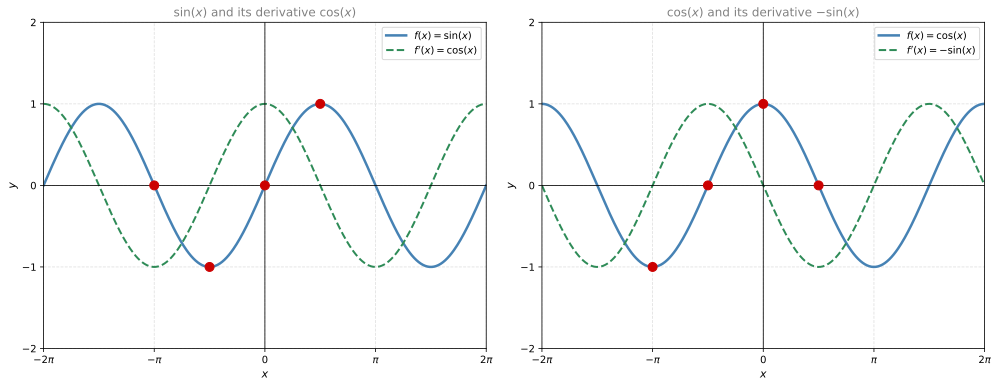
Why does this work? There is a geometric argument using the unit circle. Consider a circle of radius 1 and a radial line at angle \(x\). The projection on the \(x\)-axis is \(\cos(x)\) and on the \(y\)-axis is \(\sin(x)\).
If you increase the angle by a tiny amount \(\Delta x\), a small right triangle forms near the tip of the radius. As \(\Delta x\) shrinks, the hypotenuse of that triangle approaches the arc length \(\Delta x\), and the angle of the triangle approaches \(x\). Using basic trigonometry on this triangle:
- \(\Delta \sin(x) \approx \Delta x \cdot \cos(x)\), so \(\frac{\Delta \sin(x)}{\Delta x} \to \cos(x)\)
- \(\Delta \cos(x) \approx -\Delta x \cdot \sin(x)\), so \(\frac{\Delta \cos(x)}{\Delta x} \to -\sin(x)\)
Exponential Function and Euler’s Number \(e\)
Before we can talk about the derivative of the exponential, we need to understand the number \(e = 2.71828...\)
Defining \(e\) through compound interest. Imagine you have $1 and you are shopping for banks:
- Bank 1 gives you 100% of your money once a year. After 1 year: \(1 + 1 = \$2\).
- Bank 2 gives you 50% every 6 months. After 1 year: \((1 + \frac{1}{2})^2 = \$2.25\).
- Bank 3 gives you 33% every 4 months. After 1 year: \((1 + \frac{1}{3})^3 \approx \$2.37\).
- Bank 12 gives you \(\frac{1}{12}\) every month. After 1 year: \((1 + \frac{1}{12})^{12} \approx \$2.61\).
- Bank 365 gives you \(\frac{1}{365}\) every day. After 1 year: \((1 + \frac{1}{365})^{365} \approx \$2.71\).
The more subdivisions, the better. In general, Bank \(n\) gives you \(\frac{1}{n}\) of your money \(n\) times a year, so after one year you have \((1 + \frac{1}{n})^n\).
Why does Bank 3 beat Bank 1? Because your interest earns interest. The $0.33 you get after 4 months itself earns interest for the remaining 8 months. This is called compound interest.
| Bank | Formula | After 1 year |
|---|---|---|
| 1 | \((1 + 1)^1\) | $2.00 |
| 2 | \((1 + \frac{1}{2})^2\) | $2.25 |
| 3 | \((1 + \frac{1}{3})^3\) | $2.37 |
| 12 | \((1 + \frac{1}{12})^{12}\) | $2.61 |
| 365 | \((1 + \frac{1}{365})^{365}\) | $2.71 |
| \(\infty\) | \(\lim_{n\to\infty}(1 + \frac{1}{n})^n\) | $2.71828… = \(e\) |
Bank Infinity gives you an infinitesimal amount of interest every instant. The number this converges to is \(e\).
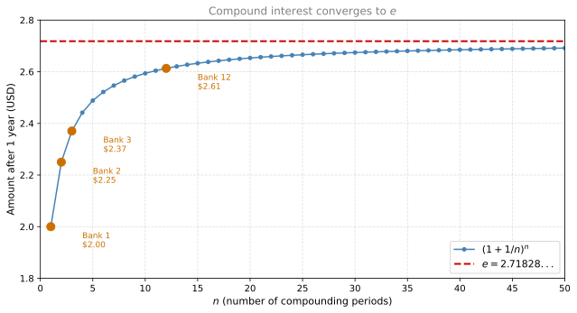
Note
Euler’s number: \(e = \lim_{n \to \infty} \left(1 + \frac{1}{n}\right)^n = 2.71828...\)
The effect really adds up over multiple years. Each year, your money grows by the same effective rate (100% for Bank 1, 125% for Bank 2, 137% for Bank 3), and Bank 3 pulls far ahead:
| Year | Bank 1 (+100%/yr) | Bank 2 (+125%/yr) | Bank 3 (+137%/yr) |
|---|---|---|---|
| Now | $1 | $1 | $1 |
| 1 | $2 | $2.25 | $2.37 |
| 2 | $4 | $5.06 | $5.62 |
| 3 | $8 | $11.39 | $13.32 |
| 4 | $16 | $25.63 | $31.57 |
The special property of \(e\) is this: the function \(f(x) = e^x\) is its own derivative. That is, \(f'(x) = e^x\). No other base has this property, which is why \(e\) appears everywhere in science, statistics, and machine learning.
Let’s verify numerically at \(x = 2\), where \(e^2 \approx 7.39\):
| \(\Delta x\) | \(\Delta f = e^{2 + \Delta x} - e^2\) | Slope \(= \Delta f / \Delta x\) |
|---|---|---|
| 1 | \(e^3 - e^2 \approx 12.70\) | \(12.70\) |
| 1/2 | \(e^{2.5} - e^2 \approx 4.79\) | \(9.59\) |
| 1/4 | \(e^{2.25} - e^2 \approx 2.10\) | \(8.39\) |
| 1/8 | \(e^{2.125} - e^2 \approx 0.98\) | \(7.87\) |
| 1/16 | \(e^{2.0625} - e^2 \approx 0.48\) | \(7.62\) |
| 1/1000 | \(e^{2.001} - e^2 \approx 0.01\) | \(7.39\) |
The slopes converge to 7.39, which is \(e^2\) itself. The slope of the tangent at the point \((2, e^2)\) is precisely \(e^2\). This happens at every point: the tangent at \((x, e^x)\) has slope \(e^x\).
Note
Derivative of \(e^x\): If \(f(x) = e^x\), then \(f'(x) = e^x\).
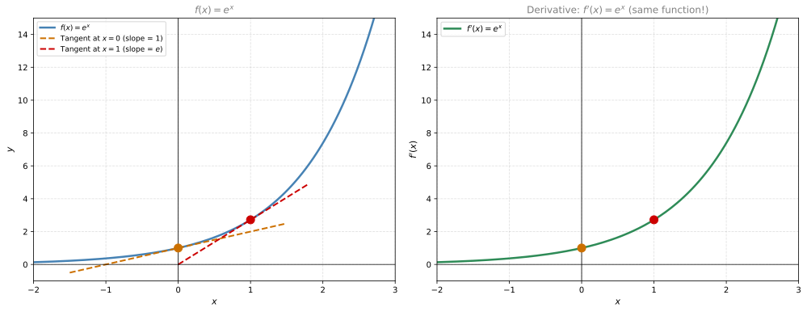
The left and right plots are identical. That is the remarkable property of \(e^x\): the function and its derivative are the same curve.
Logarithmic Function
The natural logarithm \(\ln(x)\) is the inverse of \(e^x\). What does that mean? If you want to find the number such that \(e\) raised to that number equals \(x\), that number is \(\ln(x)\):
\[ e^{\ln(x)} = x \quad \text{and} \quad \ln(e^y) = y \]
Since \(\ln\) is the inverse of \(e^x\), we can use the inverse function derivative rule to find its derivative. Recall:
\[ g'(y) = \frac{1}{f'(x)} \quad \text{where } y = f(x) \]
Take a specific example: on the \(e^x\) curve, the point \((2, e^2)\) has a tangent with slope \(f'(2) = e^2 \approx 7.39\). On the \(\ln\) curve, the corresponding point is \((e^2, 2) = (7.39, 2)\). The slope of the tangent there is:
\[ g'(e^2) = \frac{1}{f'(2)} = \frac{1}{e^2} = \frac{1}{7.39} \approx 0.135 \]
Notice that \(e^2\) is \(y\), so \(g'(y) = \frac{1}{y}\).
General derivation: Since \(f(x) = e^x\) and \(f^{-1}(y) = \ln(y)\):
\[ \frac{d}{dy} \ln(y) = \frac{1}{f'(f^{-1}(y))} = \frac{1}{e^{\ln(y)}} = \frac{1}{y} \]
Note
Derivative of \(\ln(x)\): If \(f(x) = \ln(x)\), then \(f'(x) = \frac{1}{x}\).
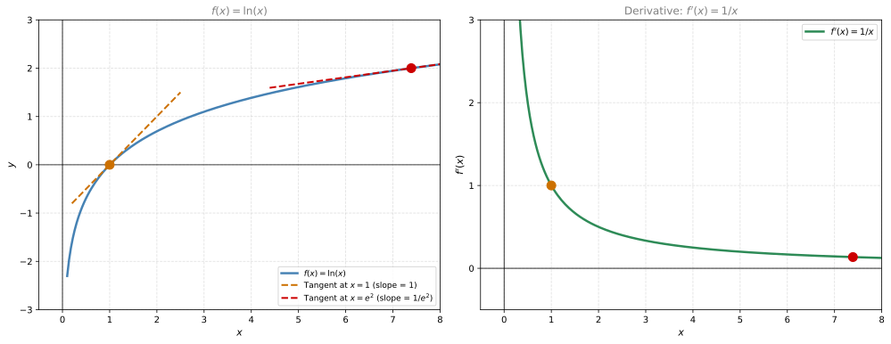
Notice that \(f'(x) = 1/x\) is always positive (for \(x > 0\)), which makes sense because \(\ln(x)\) is always increasing. At \(x = 1\) the slope is 1, and as \(x\) grows the slope gets smaller and smaller (the log curve flattens out).
When Does the Derivative Not Exist?
So far, every function we have seen has a well-defined derivative at every point. But that is not always the case. A function is differentiable at a point if you can draw a unique tangent line at that point. Some functions fail this test, and we call them non-differentiable at those points.
There are three situations where the derivative does not exist:
1. Corners and Cusps
Consider \(f(x) = |x|\) (the absolute value function). It equals \(x\) for \(x \geq 0\) and \(-x\) for \(x < 0\). At \(x = 0\), the function has a sharp corner. You could draw many different lines through that point, but none of them is a unique tangent. The derivative does not exist there.
The rule: if you are drawing the function with a pencil and you have to stop and change direction abruptly (a corner), the function is not differentiable at that point.
2. Jump Discontinuities
Consider a piecewise function that jumps: for example, \(f(x) = 2\) for \(x < -1\) and \(f(x) = x + 1\) for \(x \geq -1\). At \(x = -1\) the function jumps from 2 to 0. If you have to lift your pencil to draw it, the function is not continuous there, and a function that is not continuous cannot be differentiable.
3. Vertical Tangents
Consider \(f(x) = x^{1/3}\) (the cube root). At \(x = 0\), the tangent line is vertical (parallel to the \(y\)-axis). A vertical line has undefined slope (rise / 0), so the derivative does not exist.
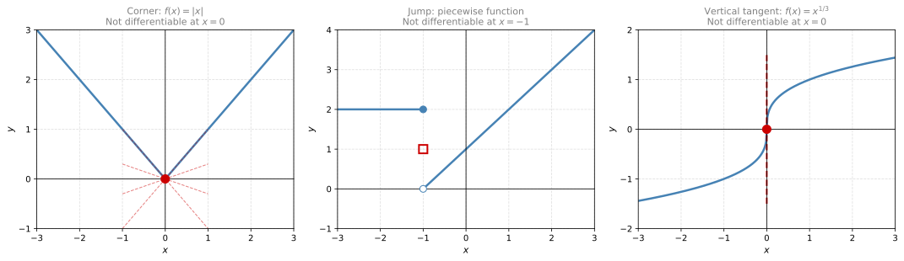
Note
Three cases where the derivative does not exist:
- Corners/cusps (abrupt direction change)
- Jump discontinuities (function is not continuous)
- Vertical tangents (slope would be infinite)
Review Questions
1. Using the power rule, what is the derivative of \(f(x) = x^5\)?
TipAnswer
\(f'(x) = 5x^4\). Bring the exponent down as a multiplier and subtract one from the exponent.
1. What is the derivative of \(f(x) = x^{-3}\)?
TipAnswer
\(f'(x) = -3x^{-4} = -\frac{3}{x^4}\). The power rule works for negative exponents too.
1. If \(f(x) = e^x\) and \(g(x) = \ln(x)\) are inverses of each other, explain why \(g'(x) = 1/x\).
TipAnswer
Since \(g = f^{-1}\), the inverse function rule gives \(g'(y) = 1/f'(x)\) where \(y = f(x)\). Since \(f'(x) = e^x\) and \(y = e^x\), we get \(g'(y) = 1/e^x = 1/y\). Replacing \(y\) with \(x\): \(g'(x) = 1/x\).
1. What is the derivative of \(\sin(x)\) and \(\cos(x)\)?
TipAnswer
The derivative of \(\sin(x)\) is \(\cos(x)\). The derivative of \(\cos(x)\) is \(-\sin(x)\).
1. At what points is the function \(f(x) = |x + 2|\) not differentiable, and why?
TipAnswer
At \(x = -2\), because the absolute value creates a corner there. You cannot draw a unique tangent line at a corner, so the derivative does not exist.
1. What makes the number \(e\) special?
TipAnswer
\(e \approx 2.71828\) is defined as \(\lim_{n \to \infty}(1 + 1/n)^n\). Its special property is that \(e^x\) is its own derivative: \(\frac{d}{dx}e^x = e^x\). No other base has this property.